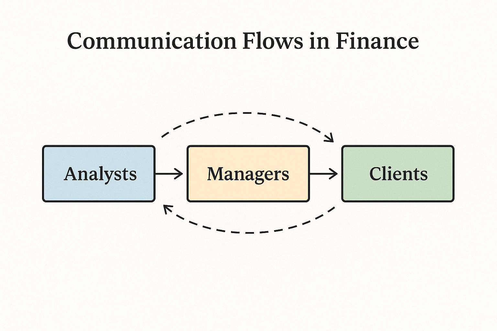
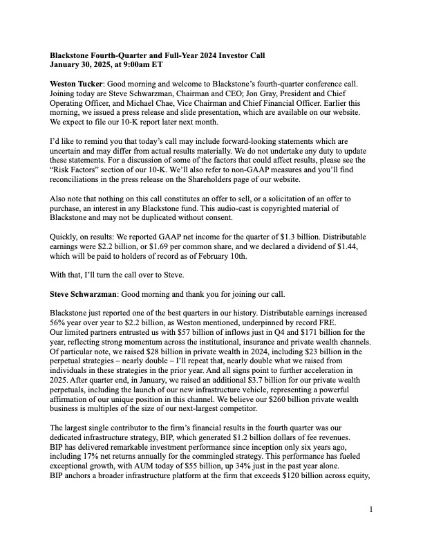
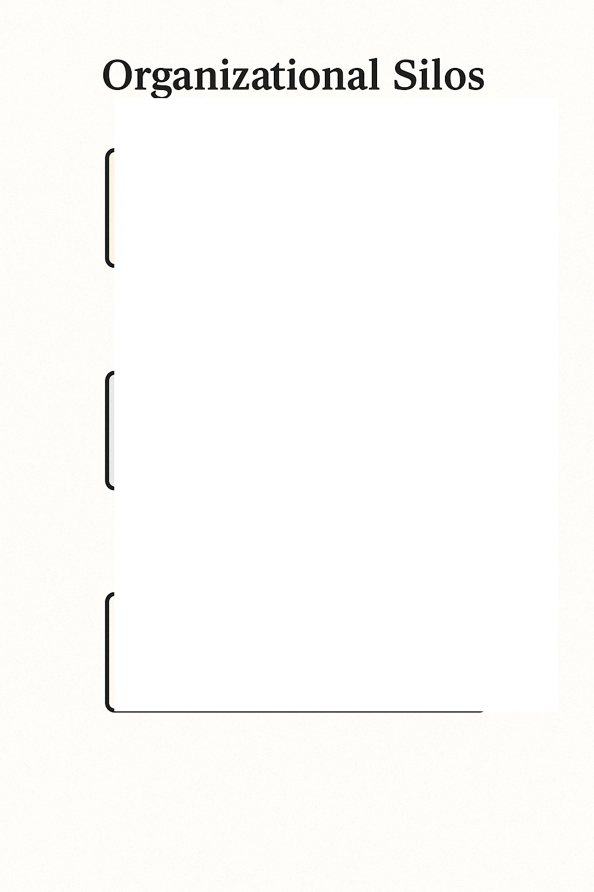

This research project investigates how communication operates inside one of the world’s most powerful financial firms—
Blackstone. The firm’s external communication strategy
prioritizes investor reassurance, legal compliance, and reputation management, while internal communication is shaped by hierarchy,
confidentiality, and technological change.

Conceptual illustration of communication flows in finance.
Blackstone’s quarterly calls and investor reports use tightly controlled, optimistic language—
emphasizing network effects and favorable returns. These rhetorical choices aim to build trust
and credibility while carefully avoiding liability. The tone is formal and forward‑looking, serving a global audience of stakeholders.
This reflects the ethical obligation to provide truthful, non‑misleading financial disclosures, particularly in international markets
where investor protections vary.

Excerpt from a typical investor call transcript.
Internal Hierarchy & Information Flow
Inside the firm, communication is top‑down and siloed. Junior employees often lack visibility into broader decisions and are
expected to operate on a “need‑to‑know” basis. Regulatory structures like
“Chinese walls” reinforce internal barriers, limiting transparency to prevent conflicts of interest—
especially between investment and advisory arms. These structures reflect global ethical standards for confidentiality and fiduciary
responsibility.

Visualizing the “need‑to‑know” information flow.
Excel Collaboration & Workflow Communication
Real‑time collaboration on Excel models is common, especially during high‑stakes deals. Changes are often made live, with senior
team members giving feedback on the fly—sometimes verbally, sometimes via Slack or Zoom. This mode of communication requires
clarity, precision, and responsiveness, and often reveals the power dynamics within teams. Consistent formatting and version
control are essential for avoiding costly misunderstandings.
Team members collaborating.
Networking in Finance
Interviews with professionals highlighted that networking in finance is a strategic form of communication. Personal introductions
must be clear, brief, and tailored. Following up with useful insights or notes builds credibility and opens future opportunities.
There’s a high premium placed on how you frame yourself—especially in elite firms where cultural fit and professionalism are
closely evaluated.
Two professionals in conversation
Ethical Communication Challenges
When Blackstone faced backlash in Denmark over rent increases, it responded with legally sound but emotionally disconnected messaging.
The public expected accountability; the firm responded with compliance language. This case showed the limits of investor‑focused
communication, especially in cross‑cultural contexts where social ethics differ.
Public reaction during the Danish housing controversy.
This research reveals that strategic, hierarchical, and context‑aware communication is central to success in financial services.
From Excel editing and investor calls to global crises and internal protocols, every communication choice reflects deeper ethical,
cultural, and organizational values.